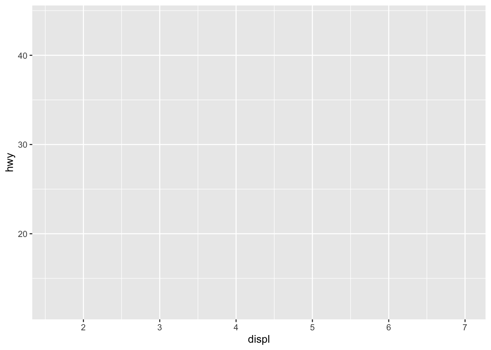
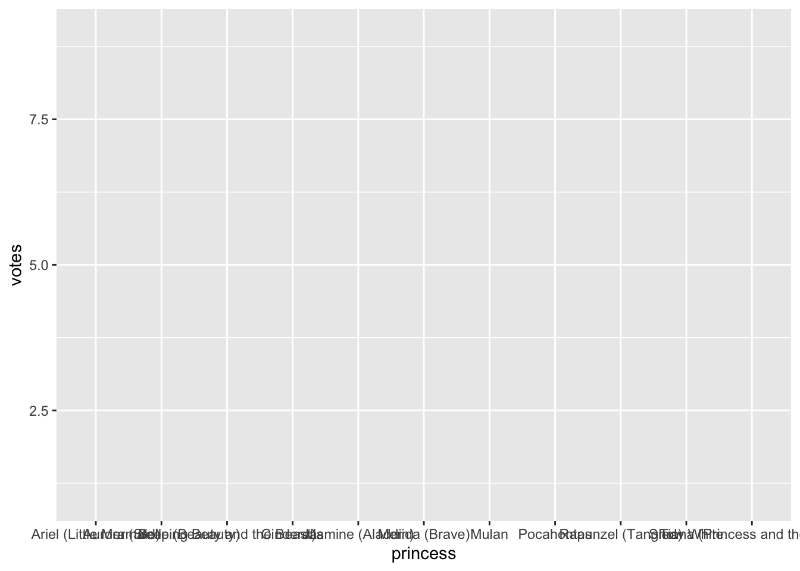
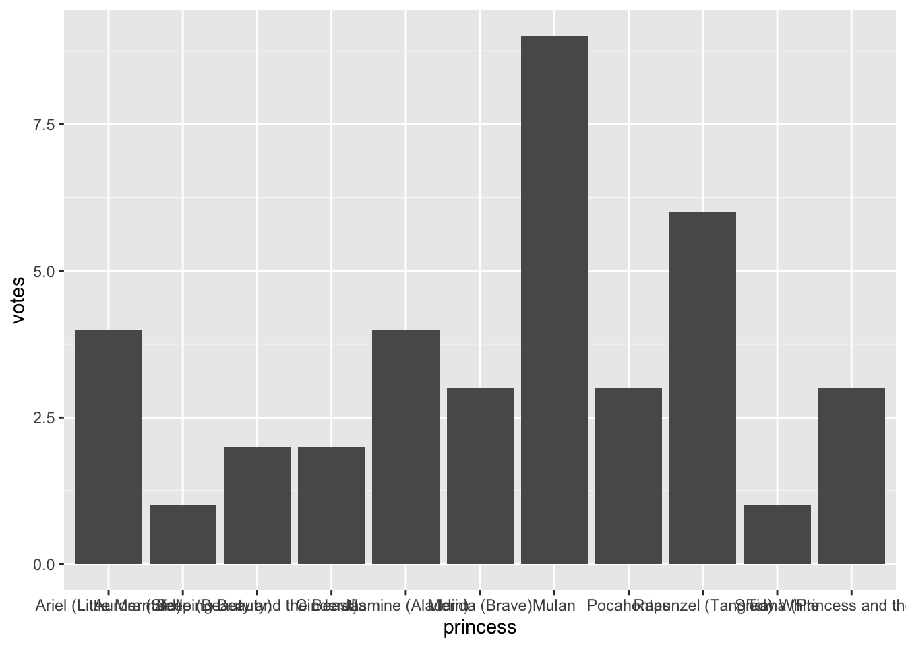
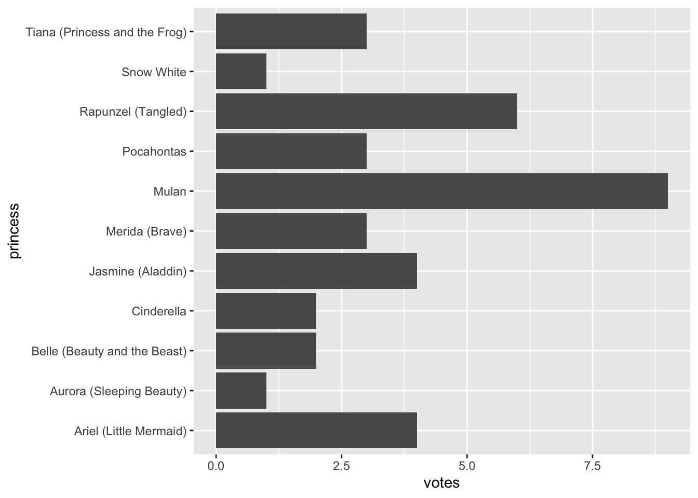
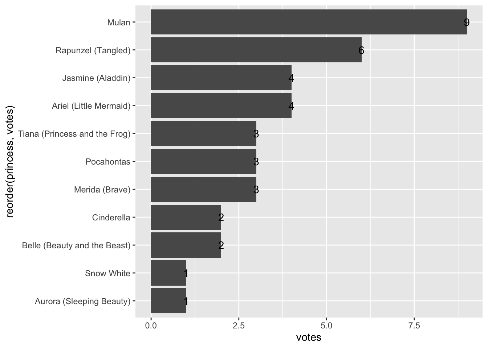
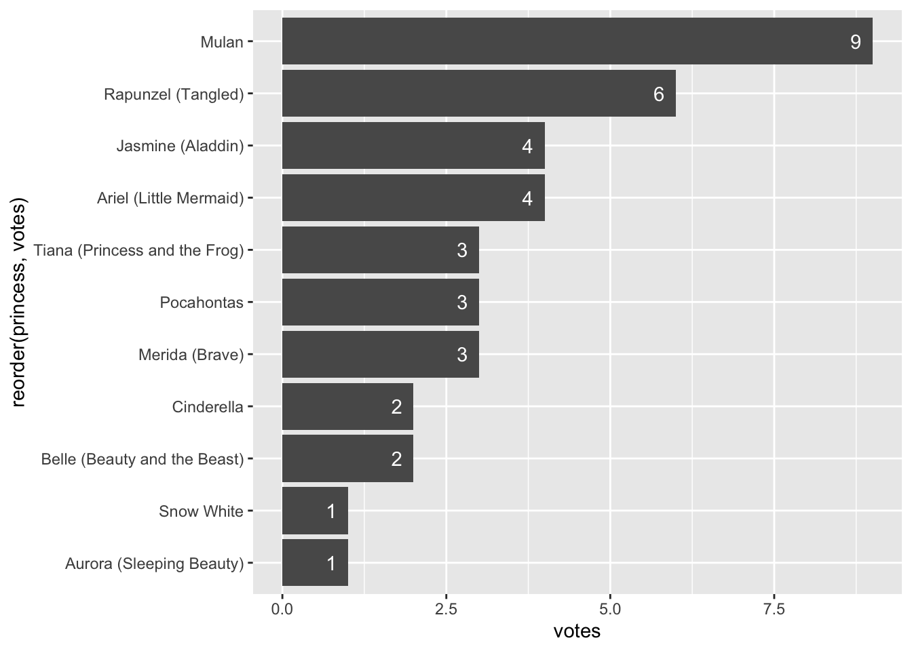
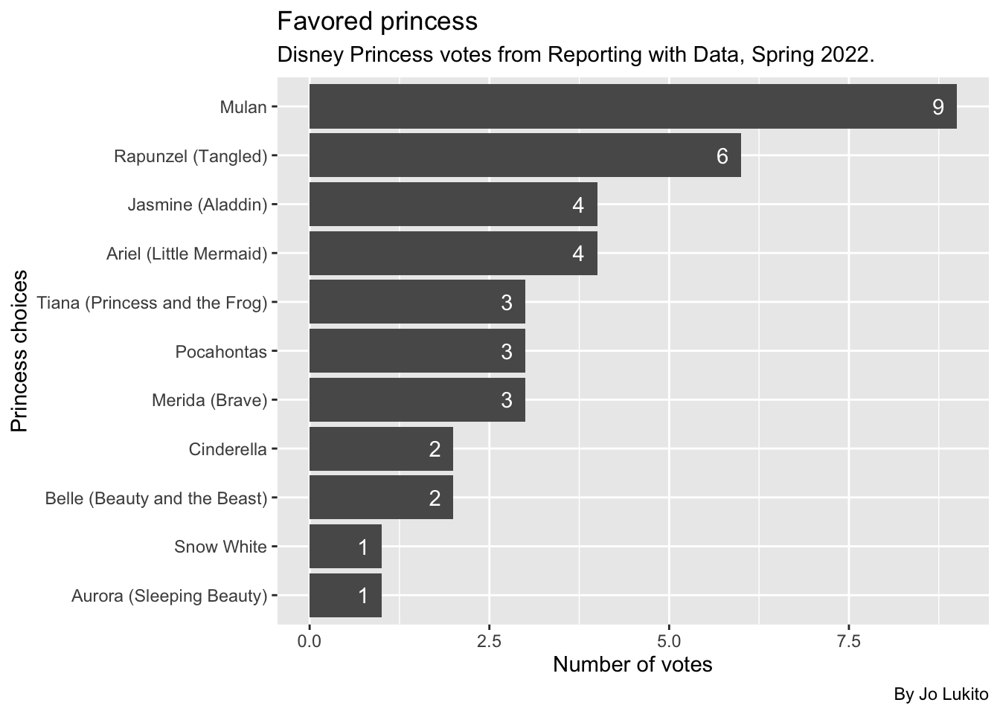

Chapter 7 Data Viz - Intro to ggplot
The chapter is by Prof. Lukito, who uses a PC.
This week, we’ll move on from summaries to talking about data visualizations (“data viz”), an essential skill for any data journalist. While there are a lot of different ways to make figures and graphs, this chapter will focus on one popular R package for data viz: ggplot.
7.1 Goals for this section
In this chapter, we’ll learn the basics of data visualization using the Grammar of Graphics principles. We’ll start with some smaller datasets to give you a sense of how the code works. And, in the next chapter, you’ll apply this to a dataset we have already used in the class.
Our learning goals are:
- To learn about the Grammar of Graphics
- To make scatterplots
- To make bar charts
7.2 Introduction to ggplot
ggplot2 is the data visualization library within Hadley Wickham’s tidyverse. It is a beast of a package because it supports a whole variety of different types of data visualizations, from bar charts and line charts to fancy choropleth maps and animated figures.
Even though the package is called ggplot2, the function to make graphs is just ggplot(). So, for simplicity, we’ll just call everything ggplot
The ggplot package relies on a concept called the Grammar of Graphics, hence the gg in ggplot. The basic logic of the Grammar of Graphics is that any graph you could ever want to build will need similar things: a data set, some information about the scales of your variables, and the type of figure or graph that you want to create. These various things can be “layered” on top of each other to create a visually pleasing graph.
Folks who have used Adobe creative programs (e.g., Photoshop, Illustrator, etc.) can think about it like laying an image: each layer in your image should do something to change the image. Likewise, each layer in a ggplot figure will add to the overall graph.
7.2.1 What I like/dislike about ggplot
Let me just start by saying that I’m a total ggplot geek. I’ll talk about ggplot figures the way people talk about new TikTok trends. When producing figures and graphs in R, ggplot is the absolute best approach because you’ll see the results right in your R notebook. And, basic data visualizations are an absolutely essential skill for any data journalist: it helps you find important things in your data that you may ultimately report on. So, ggplot is important for any R-based data journalism project.
That being said, there are less complicated ways of creating publishable graphics. Tools like Datawrapper and Flourish can produce equally beautiful graphics without the code. So why learn ggplot? Because, (1) ggplot is super useful when you’re just learning about the data and (2) to get good enough in ggplot to make publishable graphics, you have to practice, practice, practice. Yes, ggplot is a big package with lots of nuiance. But the more you take the time to learn it, the more you will master it.
7.2.2 The Grammar of Graphics
This section was inspired by Matt Waite and the BBC Visual Cookbook.
As I said above, the gg in ggplot stands for “Grammar of Graphics,” which is a fancy way of saying we’ll build our charts layer by layer. Once you know what data you are using, there are three main layers to any ggplot chart:
- aesthetics (“aes”): this is where you put information about the dataset, including specifics about what fields/variables should be on the x-axis and y-axis.
- geometries (“geom”): this is where you tell R the shape of your visualization, whether it’s lines, bars, points, or something else.
- themes (“theme”): this is where you tell R the font you’d like to use, the background color, and other things you want to “pretty up” the data viz.
In addition to these three main layers, there are lots of helper layers we’ll learn about along the way, including:
coord_flip: a special layer for flipping the chart
scales: transforming the data to make the plot more read-able
labels (“labs”): for making titles and labels
facets: For graphing many elements of the same data set in the same space (one dataset, multiple figures)
This all may seem complicated now, but it’ll make sense once we start putting together these layers together, one at a time. After all, the best way to learn any R package is to do it
7.3 Start a new project
- Get into RStudio and make sure you don’t have any other files or projects open.
- Create a new project, name it
yourname-ggplotand save it in your rwd folder. - (No need for a folder structure, we’ll do this all in one file.)
- Start a new RMarkdown notebook and save it as
01-intro-ggplot.Rmd. - Remove the boilerplate and create a setup section that loads
library(tidyverse), like we do with every notebook. Theggplotpackage is a part oftidyverse, so when you loadtidyverse, you’ll loadggplot. We will also loadjanitor, which we will load to use theclean_names()function.
7.4 The layers of ggplot
Much of this first plot explanation comes from Hadley Wickham’s R for Data Science, with edits to fit the lesson here.
To explore how ggplot works, we’re going to work with some data that already comes with tidyverse. Let’s take a look at it now.
- Start a new section “First plot” and add a code chunk.
- Add the code below and run it to see what the
mpgdataset looks like.
mpg## # A tibble: 234 × 11
## manufacturer model displ year cyl trans drv cty hwy fl class
## <chr> <chr> <dbl> <int> <int> <chr> <chr> <int> <int> <chr> <chr>
## 1 audi a4 1.8 1999 4 auto… f 18 29 p comp…
## 2 audi a4 1.8 1999 4 manu… f 21 29 p comp…
## 3 audi a4 2 2008 4 manu… f 20 31 p comp…
## 4 audi a4 2 2008 4 auto… f 21 30 p comp…
## 5 audi a4 2.8 1999 6 auto… f 16 26 p comp…
## 6 audi a4 2.8 1999 6 manu… f 18 26 p comp…
## 7 audi a4 3.1 2008 6 auto… f 18 27 p comp…
## 8 audi a4 quattro 1.8 1999 4 manu… 4 18 26 p comp…
## 9 audi a4 quattro 1.8 1999 4 auto… 4 16 25 p comp…
## 10 audi a4 quattro 2 2008 4 manu… 4 20 28 p comp…
## # … with 224 more rowsThe mpg data contains observations collected by the US Environmental Protection Agency on 38 models of cars. It’s a data set embedded into the tidyverse for lessons like this one.
For this lesson, we’ll use (at least two) two specific variables in this data:
displ, a car’s engine size, in liters.hwy, a car’s fuel efficiency on the highway, in miles per gallon (mpg).
With these two variables, we can test the theory that cars with smaller engines (displ) get better gas mileage (hwy). To do this, we’ll make a plot.
7.4.1 Build the base layer
When working with the ggplot2 package, you’ll start nearly every figure with the ggplot() function. In the ggplot() function, you’ll tell R what data you’re using, and the coordinate system you want to build based on the data.
The first thing you’ll want to do is tell ggplot the dataset you want to use (in this case, mpg). Let’s do that now.
Do this:
- In your first plot section, add some text that you are building the mpg chart.
- Make a new code chunk and add the code below.
ggplot(mpg)
This tells us… absolutely nothing! But that’s not surprising: you haven’t even told ggplot what variables you want to focus on or the way you want to visualize the data. To do that, you’ll need a second argument (and the first official layer in your plot): the aes() (short for “aesthetic”). This is considered a mapping argument, because you use this argument to tell ggplot how you want to map your data (in our case, mpg).
In an aes() argument, you want to indicate the variables that you will be mapping to the x and y axes. This is usually done with the x and y arguments, so your aes() argument will look something like this: aes(x = some_variable, y = another_variable), where some_variable and another_variable are variables in your dataset.
In our case, we’ll practice using displ (the car’s engine size) and hwy (the car’s highway efficiency). Let’s plug in our aes() layer now, directly into the ggplot() function.
Do this:
- In the code chunk you created above, add the following line of code.
ggplot(mpg, aes(x = displ, y = hwy))
Let’s work through the code above:
ggplot()is the function we use to make a chart.
- The first argument
ggplot()needs is the data. It could be specified asdata = mpgbut we don’t need thedata =part as it is always the first item specified inside of (or piped into)ggplot()
- Next is the aesthetics or
aes(). This is where tell ggplot what data to plot on thexandyaxis. You might see this asmapping = aes(<VALUES>)but we can often get by without themapping =part.
This code tells us just a little bit more than nothing: instead of a blank box, we can now see the grid for the x and y axis. But we’ll need another layer to add data to this grid!
A quick FYI: The aes() that you put into ggplot() apply to the whole graph. Other (geom) layers that you write after this main layer can also take aes() arguments. We’ll do that in future charts.
Now that we have our ggplot() argument and first layer done, let’s talk about how to add layers to this.
7.4.2 Layers can we add to our plots
Our base layer is the starting point for every ggplot chart, but it’s certainly not the end. In the next section below, we’ll work with three types of layers. Don’t worry if this seems like a lot of information: we’ll go layer by layer so you can see the whole process.
Below are some of the layers we will work with:
- geometries (or “geoms” as we call them) are the way we plot data on the base grid. There are many geoms, but here are a few common ones:
geom_point()adds dots onto the grid based on the data. Will will use these here to build a scatterplot graph.geom_line()adds lines between data points on the grid. Basically a line chart.geom_col()andgeom_bars()adds bars to the grid based on values in the data. A bar chart. We’ll usegeom_col()later in this lesson but you can read about the difference between the two in a later chapter.geom_text()adds labels based on values in the data.
- themes change the visual styles of the grids and axis. There are several available within ggplot and many other from the R community.
- labels (or labs, since we use the
labs()function for them) are a series of text-based items we can layer onto our plots like titles, bylines and axis names.
In addition to these layers, we’ll use the + at the end of each line. Think of the + as the %>% of ggplot. So, your code will look something like this (don’t run this code chunk!):
ggplot(data, aes(x = some_variable, y = another_variable)) + #creates the base layer, with the + at the end
geom_layer #adds a geomOkay, now that we know what the code looks like, let’s proceed with the first geom.
7.4.3 Add geom_point
The second layer we’ll add to our figure is a geom layer. “Geom” is short for geometries: these layers provide a lot of different ways to shape and visualize the data. Simply put, geom layers tell R what kind of chart you’d like to make.
Let’s start with a straightforward geom layer, geom_plot(), which adds a layer of points to your plot (this type of plot is called a scatterplot).
- EDIT your plot chunk to add the
+and a new line forgeom_point()
ggplot(mpg, aes(x = displ, y = hwy)) + # don't forget the + at the end of this line
geom_point() # the geom_point layer
#The geom_point() function will inherit the aes() values from the line above it.Now we’re starting to get somewhere! With the geom_point() layer added, our data are now finally displayed as points. And, as you can see, the pattern is pretty obvious: the lower the car’s displ (their engine size, in liters), the higher the hwy (their gas milage on a highway).
7.4.4 Adding other mappings
As mentioned in the above section, there are aesthetics (aes) arguments that can apply to the plot as a whole (which we did with the x and y values above) and there are aesthetics we can write into specific geom layers (these aesthetics will not apply to other layers–just that geom). This can be useful if you wanted to incorporate a third variable into your figure, as we will demonstrate below, using color.
- Edit your
geom_point()function to add a color mapping to the points withaes(color = class).coloris the type of aesthetic, andclassis another variable (column) in the data.
ggplot(mpg, aes(x = displ, y = hwy)) +
geom_point(aes(color = class)) # this is the line you are editing
As you can see, the dots were given colors based on the values in the class column, and ggplot also added a legend to the graphic. These colors are the default color settings in ggplot
There are other aesthetics you can use.
- Change the
coloraesthetic to one of these values and run it to see how it affects the chart:alpha,sizeandshape. (i.e.,alpha = class.)
- Once you’ve tried them, change it back to
color.
OK, enough of the basics … let’s build a chart you might care about.
7.5 Let’s build a bar chart
In our first week of class, we sent out a survey where you told us your favorite Disney Princess and favorite flavor of ice cream. Let’s now play around with some of this data.
For this lesson, we’re not going to create a different notebook or download the data to our computer. Instead, we’re going to save the data directly into a tibble.
- Start a new section: Princess chart data upload.
- In the text, note that we are importing the princess chart data.
- Add the code below to get the data.
# read the data and create an tibble object called "class"
class <- read_csv("https://docs.google.com/spreadsheets/d/e/2PACX-1vQfwR6DBW5Qv6O5aEBFJl4V8itnlDxFEc1e_-fOAtBMDxXx1GeEGb8o5VSgi33oTYqeFhVCevGGbG5y/pub?gid=0&single=true&output=csv")## Rows: 38 Columns: 3
## ── Column specification ────────────────────────────────────────────────────────
## Delimiter: ","
## chr (3): Name, Princess, Ice cream
##
## ℹ Use `spec()` to retrieve the full column specification for this data.
## ℹ Specify the column types or set `show_col_types = FALSE` to quiet this message.# peek at the data
class## # A tibble: 38 × 3
## Name Princess `Ice cream`
## <chr> <chr> <chr>
## 1 Adam O Cinderella Cookie Dough
## 2 Adam C Mulan Cookie Dough
## 3 Amaris Tiana (Princess and the Frog) Coffee
## 4 Andrew Mulan Chocolate
## 5 Athena Belle (Beauty and the Beast) Cookies and Cream
## 6 Aurora Aurora (Sleeping Beauty) Cookie Dough
## 7 Avery Mulan Cookie Dough
## 8 Brady Jasmine (Aladdin) Cookies and Cream
## 9 Carolyn Merida (Brave) Vanilla
## 10 Casey Mulan Cookie Dough
## # … with 28 more rowsSo, now, you should have the data in your environment.
7.5.1 Prepare the data
While there are ways for ggplot to calculate values from your data on the fly, I prefer to first build a table of the values I want, and then I will plot it on a chart. It’s helpful to think of these steps as separate so you have a good workflow (clean the data, prepare the data in a table form, and then plot the data).
Today, our goal will be to make a bar chart, sometimes known as a column chart or histogram. This bar chart will show the number of votes for each princess from the data. So, we need to count the number of rows for each value … our typical group_by/summarize/arrange (GSA) process.
For this lesson, I’m going to use the count() shortcut, since we haven’t used it much lately. Next, I’ll save the summarized data into a new dataframe called princess_data. Follow along in your notebook:
- Add a section: Princess chart.
- Add text that you are creating a data frame to plot.
- Add the code below to create that data.
#library(janitor) #run this if you have not loaded the janitor package!
princess_data <- class %>%
clean_names() %>% #remember, this is from the janitor packae!
count(princess, name = "votes", sort = TRUE)
# this above line counts the princess rows, sets the name and sorts
# peek at the data
princess_data## # A tibble: 11 × 2
## princess votes
## <chr> <int>
## 1 Mulan 9
## 2 Rapunzel (Tangled) 6
## 3 Ariel (Little Mermaid) 4
## 4 Jasmine (Aladdin) 4
## 5 Merida (Brave) 3
## 6 Pocahontas 3
## 7 Tiana (Princess and the Frog) 3
## 8 Belle (Beauty and the Beast) 2
## 9 Cinderella 2
## 10 Aurora (Sleeping Beauty) 1
## 11 Snow White 1At this point, y’all should be plenty familiar with these summary functions, and the output should be easy to interpret: we’re just countin the number of rows for each princess.
Now that we have our table data, let’s actually plot it.
7.5.2 Build our plot with geom_col
Like in the previous lesson, we’ll start our plot by creating the first layer: the ggplot() function, which takes the data as its first argument and the aes() mapping layer as its second argument.
- Add some text noting that you’ll now plot.
- Add the following code chunk, which is the first layer
ggplot(princess_data, aes(x = princess, y = votes)) # sets our x and y axes
You’ll see the grid and x/y axis of the data, but no geometries are applied yet, so you won’t see any data. But remember, we’re adding these all in gradual layers.
7.5.3 Add the geom_col layer
Now it is time to add our columns. To do this, we’ll use geom_col(). Similar to geom_point(), geom_col() adds a geometric layer that tells R how to display the data (in this case, with columns as opposed to points). Let’s write this code now.
- Edit the plot code to add the ggplot pipe
+and on the next line addgeom_col().
ggplot(princess_data, aes(x = princess, y = votes)) + # don't forget the + on this line
geom_col() # adds the bars
Our two-layer chart is getting somewhere now. We’re able to see the data in the plot, but there are a couple issues:
- We can’t read the value names. We can fix this.
- The order of the bars is alphabetical instead of in vote order. Again, we can fix it.
7.5.4 Flip the axes
One way to fix the labels is to “flip” the axes, so the x axis becomes the y axis and vice versa. This is the equivalent of rotating the whole figure. When we do this, the axis will turn sideways, making it easier to read the labels. Worth noting: this can be a bit confusing later because the “x” axis is now going up/down (as opposed to left and right).
Let’s learn how to flip the axes now. We’ll do this by adding a new layer, coord_flip(), which is a special layer that flips the axes. Just like we added the previous geom_col() layer using +, we’ll do the same thing here. Let’s do that now.
- Edit your plot chunk to add the ggplot pipe
+andcoord_flip()on the next line.
ggplot(princess_data, aes(x = princess, y = votes)) +
geom_col() + # don't forget the +
coord_flip() # flips the axis
As you can see, rather than having vertical bars, we now have horizontal bars, and the names of each princess are fully displayed and read-able. Much better!
But the bars are still in an alphabetical order, as opposed to a vote order, so let’s fix that now.
7.5.5 Reorder the bars
The bars on our chart are in alphabetical order of the x axis (and reversed thanks to our flip.) We want to order the values based on the votes in the data.
Complication alert: Categorical data can have factors, which are like an internal ordering system. Some categories, like months in a year, have an “order” that is not alphabetical.
We can reorder our categorical values in a plot by editing the x values in our aes() using reorder(). (There is a tidyverse function called fct_reorder() that works the same way.
reorder() takes two arguments: The column to reorder, and the column to base that reorder on. It can happen in two different ways, and I’ll be honest and say I don’t know which is easier to comprehend.
x = reorder(princess, votes)says “set the x axis asprincess, but order asvotes. OR …x = princess %>% reorder(votes)says “set the x axis asprincessand then reorder byvotes.
They both work. Even though I’m a fan of the tidyverse %>% construct, I’m going with the first version.
- Edit the first line of your chunk to reorder the bars.
ggplot(princess_data, aes(x = reorder(princess, votes), y = votes)) + # this is the line you edit
geom_col() +
coord_flip()So now, our princess names are read-able, and the bars are organized in vote size. But what if we wanted to be clearer in our figure, so that we knew the exact number of votes for each princess? Let’s learn how to add this information.
7.5.6 Adding a geom_text layer
Now, we’re really starting to take advance of the grammar of graphics by including more than one geometric layer. Specifically, we’ll be using geom_text() to add some information to our bar charts.
As we mentioned previously, geom layers can take individual aesthetics (that build on top of the global aesthetics you put in the first layer). When using geom_text(), we’ll include some local aesthetics using the aes() argument, to tell ggplot the label we’d like to add to the plot.
- Edit your plot chunk to add the ggplot pipe
+andgeom_text()on the next line. - Add the following line to the chunk
geom_text(aes(label = votes).
ggplot(princess_data, aes(x = reorder(princess, votes), y = votes)) +
geom_col() +
coord_flip() + # don't forget +
geom_text(aes(label = votes)) # plots votes text values on chart Well that did… something. We’ve successfully added the numbers to this plot, but it’s not very pretty. First, the number sits at the end of the bar, making it harder to read. So we’ll want to horizontally adjust this by shifting the numbers a bit to the left. Second, black text is really hard to read against a dark grey background. So we’ll change the text of the number to white.
We can make both of these edits directly in the geom_text layer.
- Edit the last line of your plot chunk to add two new arguments.
- The first argument you will add is
hjust, which moves the text left. (hjuststands for horizontal justification.vjust, or vertical justification, would move it up and down). - The second argument you will add is
color, which tellsggplotwhat the color of your text should be.
As a reminder, you should always separate your arguments within a function using commas (,).
ggplot(princess_data, aes(x = reorder(princess, votes), y = votes)) +
geom_col() +
coord_flip() + # don't forget +
geom_text(aes(label = votes), hjust = 2, color = "white") # plots read-able votes text values on chart
Great! But we’re still not done. Even though we’ve added labels to each bar chart, we still haven’t added a title, and the titles of our x and y axes are not great. So let’s work on those now.
7.5.7 Add some titles and more labels
Now that we have a chart, with some information displayed in bars, flipped and arranged so we can see information, let’s add to this by giving the chart some labels. We’ll do this by adding a layer of labels to our chart using the the labs() function. We can add and change a number of things with labs(), including creating a title, and changing the x and y axis titles.
- Edit the last line of your plot chunk to add the ggplot pipe
+andlabs()in the next line. - Add a title using the
title =argument - Add a subtitle using the
subtitle =argument. This is a great place to put information about your data (like when it was collected). - Add a caption using the
caption =argument. Put your byline here! - Change the x and y axes titles using
x =andy =.
ggplot(princess_data, aes(x = reorder(princess, votes), y = votes)) +
geom_col() +
coord_flip() + # don't forget +
geom_text(aes(label = votes), hjust = 2, color = "white") + # plots votes text values on chart
# labs below has several settings
labs(
title = "Favored princess", # adds a title
subtitle = "Disney Princess votes from Reporting with Data, Spring 2022.", # adds a subtitle
caption = "By Jo Lukito", # adds the byline, replace this name with your own
x = "Princess choices", # renames the x axis label (which is really y since it is flipped)
y = "Number of votes" # renames the y axis label (which is really x since it is flipped)
)
There you go! You’ve made a chart showing how our classes rated Disney Princesses.
7.6 On your own: Ice cream!
Now it is time for you to put these skills to work:
- Build a chart about the favorite ice creams from RWD classes.
Some things to consider:
- You need a new section, etc.
- You’re starting with the same
classdata - You need to prepare the data based on
ice_cream(which is the name of a variable in yourclassdata frame) - You need to build the chart
It’s essentially the same process we used for the princess chart, but using ice_cream variable.
7.7 What we’ve learned
There is a ton, really.
- ggplot2 (which is really the
ggplot()function) is the charting library for the tidyverse. This whole lesson was about it.
Here are some more references for ggplot:
- The ggplot2 documentation and ggplot2 cheatsheets.
- R for Data Science, Chap 3. Hadley Wickam dives right into plots in his book.
- R Graphics Cookbook has lots of example plots. Good to harvest code and see how to do things.
- The R Graph Gallery another place to see examples.